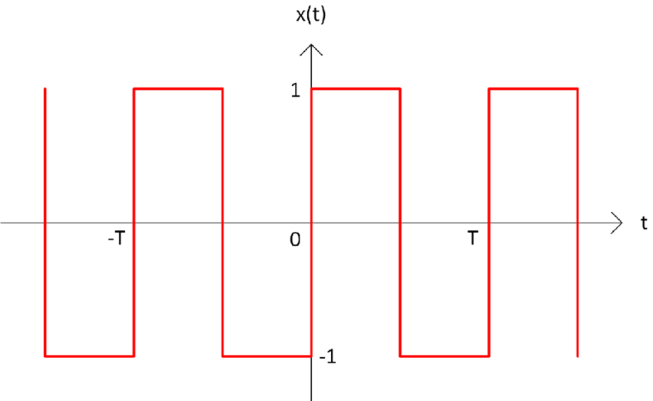

Fourier series¶
Learning outcomes¶
Interpret the mathcematical defintion of a fourier series in terms of circles
Conduct a fourier series of a square wave in terms of sinusidal functions
Remember the key factors in a Fourier series and some of its possible applications
What is a Fourier series¶
Fourier series was devolped by Joseph Fourier in the early 1800’s as a way of simplifying a specific differential equation, namley the heat equation to be discussed later. The way Fourier was able to this was to imply the ortogonality principle of cosine and sine function and expand a given periodic function f(x) as an infinite sum of trigonometric functions $\( f(x) = a_0 + a_1cos(x) + a_2cos(2x) + a_3cos(3x) + ... \\ + b_1sin(x) + b_2sin(2x) + b_3(sin3x) + ... \)$
A similar method for non-periodic functions does exist, and is called a Fourier transformation. The main idea of the Fourier series was to solve all the simple induvidual terms and by sumation end up at the complete function given enough terms. The generel form of Fourier series is defined by the expression bellow.
the, coeficient \(a_k\) and \(b_k\) are given by
In this example we will look at the very simple case of applying a Fourier series on a square wave, as illustrated in fiugre (1). A square wave is a nonsinusidal periodic function that instantaneus goes from a maximum to a minimum value. The wave in this exampple is described as f(x) = 1 when \(x\in [0,1/2]\) and f(x) = -1 when \(x\in[1, 1/2]\).

Figure 1: A square wave
In a period T = 1, calcualte the Fourier series of the square wave f(x). (Hint: Use that the function is odd and symmetric around 0 so that you only have to calculate one of the coefficients.)
Answer: \(f(x) = \frac{4}{pi} \sum_{k=1,3,5....}^{\infty} \frac{1}{k}sin(2\pi kx)\)
Animation¶
In the animation bellow, the idea is to for you to interact with a live fourier series of a square or sawtooth wave. The animation begins with mapping the cosine and sine values along the circumsphere of a single circle. Let then the slider named n represent the amount of harmonics, adding on sine waves, or visualized as adding circles on top of each other. You will make note of how the resultant wave will take shape after a typical square/sawtooth-wave as the number increases.
Application¶
The applications of fourier series is immense. The method Joseph Fourier devoted to solving the Heat equation has become an invaluable tool in mathematical derivations with great real world relation. Lets first look at the heat equation, by using the notation of the laplacian operator for the derivative, the heat equation can be described by
, given that the eigenvectors of the laplacian \(\nabla^2\) is described by cosine and sine functions in one dimension, Fourier was able to solve this equation by employing a Fourier series. In higher dimensional problems involving the Laplace operator, one must apply a complex derivative of the Fourier series called spherrical harmonics, but still the fundamental theory applies.
In signal proscessing, like that of sound waves, a common method called Fourier analysis consist of decomposing a function into components based on oscillatory properties such as frequencies. And the reverese process is called a Fourier synthesis. Going along with the theme of signal processing, one real world application of a Fourier series is in a MP3 player. The property of Fourier series that make this escpecially intersting and usefull is the fast convergence. As stated in the introduction, almost any wave can be rewritten to an infinite sum of sine waves, howeber, as you propably observed from the animation is that it doesnt requiere alot of terms for the approximation becomes very accurate. In an MP3 player, a Fourier series can be used to remember a particular sound by expansion of infinite term, but given the fast convergence and the fact that the human ear isnt to precise, one can neglect the latter terms as the differnce in precision is neglible. Hence, a sound can be stored alot more memoryeconomic due to Fourier series.